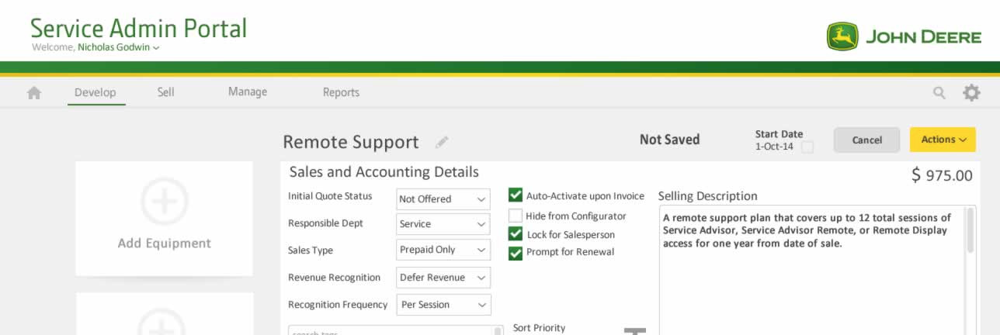
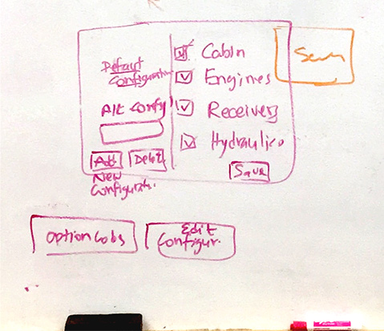
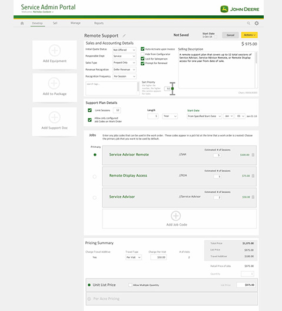
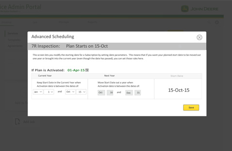

<!DOCTYPE html><html lang="en"><head><meta charset="UTF-8"/>
<meta name="viewport" content="width=device-width, initial-scale=1.0">
<meta http-equiv="X-UA-Compatible" content="IE=edge"/><title>Chris Norton: UX Portfolio</title><link href="https://fonts.googleapis.com/css?family=Open+Sans:300,600|Raleway:300,600" rel="stylesheet"/><link rel="stylesheet" href="styles/styles.css"/><script src="js/polyfill.min.js"></script></head></html><body><div class="header"><h1><span>Chris Norton</span><span>UX</span></h1></div><div class="main-content"><div class="project"><div class="project-tag"><div class="counter"></div><div class="title">Aquent IT Solutions Website</div></div><div class="section"><div class="flex-row-left"><div class="img-container"></div><div class="credits"><h5>Client</h5><p>Aquent IT Solutions</p><h5>My roles</h5><p>UX/UI</p><h5>Platforms</h5><p>Desktop, Tablet, Mobile</p><h3>Overview</h3><p>I lead the UX/UI/Front-end development efforts for Aquent IT solutions website which turned into a deep dive of the core business model and an overhaul of the content and marketing strategy within the company.</p></div></div></div><div class="section"><div class="flex-row-left"><div class="img-container"><div class="video-container"><video id="aquent-home" width="223" height="470" poster="video/aquent-home.jpg">
<source src="video/aquent-home.mp4" type="video/mp4">
</video></div></div><div><h3>Problem statement</h3><p>Aquent IT Solutions was looking to give their main website a refresh to give it a more modern feel.</p><h3>Project Goals</h3><p>- Make the website look more modern</p></div></div></div><div class="section"><div class="flex-row-icon"><div class="icon-ux icon-user"></div><div><h3>Crowd control</h3><p>This project is a great example of how UX can help unify a wide variety of opinions under a single banner. When I was brought into the team the website was operating under the premise that, "of course we need a website because a business needs a website to look like a real business." Businesses build websites like this all the time just to get something out there, but run into trouble when it comes time to update. Everyone always has a different idea of what they think users want or need. The solution is pretty easy though - just ask the users.</p></div></div></div><div class="section"><div class="flex-row-icon"><div class="icon-ux icon-fix"></div><div><h3>Good design is only obvious when you see it</h3><p>Of course asking users seems obvious now, but people wrestle with sites like these for years until someone comes in and actually identifies what's wrong. Goals and users need to be clearly defined. Page tracking was in place so they knew some pages were more popular than others, but with who? And did those pages lead to conversions? What even were the desired conversions for this site?</p><p>It may come as no surprise that previously there was a lot of speculation on what users wanted next and what the site was missing most. A lot of conversations revolved around what graphics looked old or what the best font sizes were. No real conversations about users being able to find necessary information or even who the users were.</p><p>Prioritizing site goals and identifying users made it a lot easier to direct the team away from cosmetic changes and get them to focus on missing information and usablility gaps by asking measurable questions like "Are we getting less job candidates calling in about H1B visas since adding the new section with visa information?" Less people calling in? Yes okay success then. Next thing.</p></div></div></div><div class="section"><div class="flex-row-icon"><div class="icon-ux icon-persona"></div><div><h3>User testing</h3><p>One nice thing about the main user being a job candidate at a company that hires new candidates frequently is a fairly fresh user base for ux testing.  Through a mix of ongoing surveys and live-recorded usability sessions I was able to find what conversations users were hoping to have with the site and where the communication broke down.  For one we found that our menus were trying too hard.  No need to be cute or unique with labels.  Straightforward, boring menus worked better.  Users hated contact forms and filling out job history.  So we took out the contact form and replaced it with an email where they could send it in to a real person. After each testing session we made the smallest effective change and then retested.  Over and over.</p><h3>Prioritizing users</h3><p>To set goals for the site I identified two types of users that could most impact the business: clients and job candidates.</p><h3>Clients</h3><p>Previously the website was hoping to appeal to both businesses and job candidates. In tracing project origins, we uncovered that very few business leads mentioned the website as a deciding factor. Most new business was attained through existing partners or through vendor networks with almost zero calls coming in from the site. At most a business client mentioned visiting the site just to make sure we looked bigger than a mom and pop shop.</p><h3>Job candidates: Target user found!</h3><p>However, we found that all job candidates did touch the website at some point and job seekers did have a signifigant impact on the business. Aquent generates a signifigant portion of revenue by finding developers and placing them on site with client teams. By interviewing recruiters who in-turn interviewed candidates we were able to find that the website did influence a candidate's decision-making during the interview process. So our main user was a job candidate and our goal was getting more of them to fill out the contact form or email/call in about posted jobs.</p></div></div></div><div class="section"><div class="flex-row-icon"><div class="icon-ux icon-journey"></div><div><h3>But wait there's more (usability issues)</h3><p>By asking job candidates about the website we got more insight into user frustrations throughout the recruitment process that ran a lot deeper than just making a website look more modern.</p><h4>Immediate Problems</h4><ol><li>In some cases we found the hiring process was taking upwards of two months!</li><li>Users had a hard time understanding what the company actually did.</li><li>Candidates didn't know whether they were talking to Aquent the parent company or Aquent IT Solutions which caused them to bail.</li><li>Each social media channel looked like a different company adding to confusion.</li><li>Candidates that did engage didn't feel informed about the overall process or were left wondering about next steps causing them to leave the process.</li></ol></div></div></div><!--img(src='images/aquent/aquent-header.jpg')--><div class="section"><div class="flex-row-left vertical-center"><div class="img-container"></div><div><h3>Finding solutions</h3><p>The biggest problem was time. Two months was way too long between contacting a candidate and placing them on site with a client. We were losing the ability to place new candidates competitively.</p><p>By mapping out the candidate journey that had been in place for decades I was able to get an overview of the connections and pain points between each touch point and the problem became very clear.  We had too many interviews and they were spaced too far apart.</p></div></div><div class="flex-row-left"><div class="spacer"></div><div><h4>Previous interview process where each stage can take up to 2 weeks:</h4><ol><li><div><strong>WEEK 1-2</strong><p>Recruiter reaches out for a short phone conversation to gauge interest and talk about opportunities</p></div></li><li><div><strong>WEEK 3-4</strong><p>HR - Screens for temperment and general fit into the project team environment, pre-screens for technical interviewer. In at least one case a user ended the process at the confusion of being given a tech interview by a non-tech person.</p></div></li><li><div><strong>WEEK 5-6</strong><p>Technical - Screens for advanced technical knowledge</p></div></li><li><div><strong>WEEK 7-8</strong><p>Hiring company/Client - Screens for their own individual team</p></div></li></ol></div></div><div class="flex-row-left"><div class="spacer"></div><div><h4>Revised process</h4><p>The average time that candidates spent in the process easily halved and if highly motivated could be moved through the process in less than a week.  That's a huge difference compared to two months previously!</p><ol><li><div><strong>DAY 1</strong><p>Recruiter finds a potential candidate and reaches out for interest in setting up an interview. The recruiter pre-screens for behaviorial and to answer HR related questions. Interested candidates are passed directly to techs.</p><p>This was one of the biggest blockers. Having the tech take five minutes to pre-screen a resume/portfolio after a candidate expressed interest far outweighed the 1-3 weeks lost in waiting for someone less experience to pre-screen in person.</p></div></li><li><div><strong>Day 2</strong><p>Technical interview via Skype or in person.</p></div></li><li><div><strong>Day 3</strong><p>Candidate interviews with client team where they will potentiall be placed.</p></div></li></ol></div></div></div><div class="section"><div class="flex-row-left"><div class="img-container"></div><div><h3>Content strategy</h3><p>Having users not understand what the company did was a big deal. Out of curiosity I asked around and even internal employees struggled with any sort of elevator pitch. It made sense, the main source of marketing for decades had been the website and the website changed direction every few years.  So the content strategy needed to include internal effort into helping our own people understand what they're were working together to achieve. From the ground up I created guidelines for content and tone for social media, internal communication and external marketing.</p><h3>Imagery</h3><p>As part of the content strategy I defined example imagery to be used in the marketing materials. I picked overhead city drone photos to create the feeling of seeing the big picture through future tech which is exactly what we provide in solutions to clients- technology based solutions that work with large amounts of data at the proper scale.</p><h3>Social media</h3><p>We found candidates really only found us through a select few social media sites. As a conservation of effort we brought the branding in line with those particular sites and closed the remainder.  We also committed to a content strategy to prevent these areas from looking abandoned in the future.</p></div></div></div></div><div class="project"><div class="project-tag"><div class="counter"></div><div class="title">Service Admin Portal</div></div><div class="section"><div class="flex-row-left"><div class="img-container"></div><div class="credits"><h5>Client</h5><p>John Deere</p><h5>My roles</h5><p>UX Design</p><h5>Platforms</h5><p>Desktop, Tablet</p><h3>Overview</h3><p>I led UX on John Deere&rsquo;s new Service Agreements Portal</p></div></div></div><div class="section"><div class="flex-row-left"><div class="img-container"></div><div><h3>Problem statement</h3><p>John Deere was looking to reduce the cost of maintenance by bringing duplicate silo apps under a singular technology solution and dev team. &nbsp;A unified application would allow better consistency and visibility between departments and quicker response throughout the overall workflow.</p><h3>Project goals</h3><ol><li>Combine various single-use applications under one central app.</li><li>Maintain current level of functionality</li><li>Provide a more intuitive user experience to multiple user roles</li><li>Catered experience to business owners, dealers, sales representatives, and service technicians</li><li>Make digital assets more re-usable and discoverable between departments</li></ol></div></div></div><div class="section"><div class="flex-row-left"><div class="img-container"></div><div><h3>Leveraging existing architecture</h3><p>Because there were a pre-existing internal websites being used to view agreements in various states already, the team decided to minimize usability issues and base the new site largely around what was already familiar and adopted by existing users. New features would include a speed boost by converting the experience to a single page app with and in building connections between assets that were previously isolated into the overall work-flow.</p><h4>A living style guide</h4><p>Visually, we were able to pull from a branded living style guide to define the look and feel of overall page and components to build out templates for rapid high-fidelity mockups.</p></div></div></div><div class="section"><div class="flex-row-icon"><div class="icon-ux icon-journey"></div><div><h3>Engaging users</h3><p>Using the project requirements document, email interviews, and phone calls we built out personas. &nbsp;Having personas allowed us to walk each user type through prioritizing and finding their most needed tasks.</p><div class="users"><div class="user"><div class="icon-ux icon-persona"></div><div><h4>Business owners and dealers</h4><p>Needed to be able to monitor overall profitability and admin</p></div></div><div class="user"><div class="icon-ux icon-persona"></div><div><h4>Sales representatives</h4><p>Needed the ability to quickly pull from existing template agreements, view existing agreements and work within bundled groups of agreements for customers.</p></div></div><div class="user"><div class="icon-ux icon-persona"></div><div><h4>Technicians</h4><p>Needed to be able to update the status of their job tickets on customer machines as services were performed. &nbsp;They also needed to be alerted to upcoming and past due tasks to be able to predict upcoming needs for staff workloads and ordering inventory.</p></div></div></div></div></div></div><div class="section"><div class="flex-row-icon"><div class="icon-ux icon-tree"></div><div><h3>UX research methods</h3><p>In-person workshop sessions were used to ensure updated tasks were available and intuitive for each user type to build a general consensus. &nbsp;In some cases, we found that users were using multiple tabs as a gap fix to not having the context of the data in front of them for either global or minute actions even in the existing apps. &nbsp;These areas offered us the chance to make the experience better by showcasing the missing data alongside the task. &nbsp;</p><h4>Card sorting</h4><p>To pin down navigation, users were asked to place task cards into groups that made the most sense to them. &nbsp;Consideration was also given to how frequently the user would need to access the task.</p><h4>Tree/Chalk-mark testing</h4><p>Users were presented with menu structures and asked where they would click to find areas of the site or next steps in the work-flow.</p><h4>Whiteboard/wireframe prototypes</h4><p>In some cases, multiple levels of user access complicated the approval structure of assets to the point where workflows had to be redefined. Low-fidelity prototypes allowed us to check in with users and make sure the task could still be completed. Complicated component work-flows were whiteboarded and moved into iterative digital wireframes prototypes. &nbsp;Having a digital wireframe allowed us to get more buy-in from users as well as start to check for usability issues.</p></div></div></div><div class="section"><div class="flex-row-icon"><div class="icon-ux icon-fix"></div><div><h3>Lessons learned</h3><p>One of the biggest challenges was introducing UX into an already established Agile-like development process. While we tried to map out major connections between sections ahead of development we ran into cases where the workflow dead-ended with the actual backend data available. Not an uncommon pain point, but some additional concept proofs for specific sections may have been helpful in preventing some of the data availability mismatches. &nbsp;Budgeting more time for iterations would have been more realistic. &nbsp;Overall though, allowing the users to have feedback early did make adoption very smooth as users were already familiar with how the new system would act.</p></div></div></div></div></div></body><script src="js/app.js"></script>